Science communication and outreach
Bringing astrobiology into conversations, classrooms, and the public imagination.
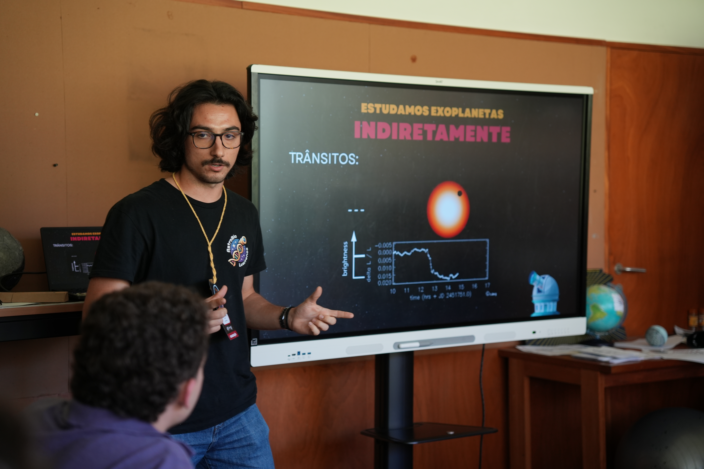
Portuguese early-career astrobiology group
AstroBioLusitanos.
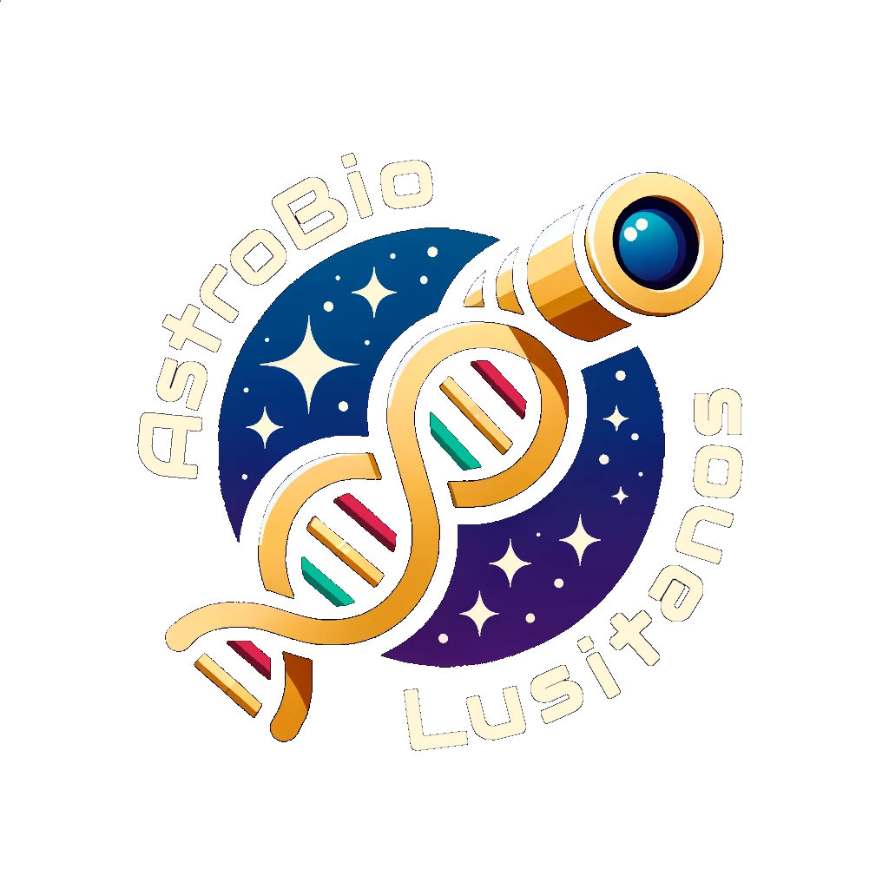
I am a co-founder of AstroBioLusitanos. We are a group of Portuguese students and researchers dedicated to astrobiology and space sciences. Founded in January 2024, we aim to communicate science in Portuguese in an accurate, accessible, and engaging way, connecting the public with research in Portugal and around the world, and inspiring the next generation of scientists.
We create science communication content for our Instagram page, sharing new scientific discoveries, educational topics, and interviews with researchers.
We also bring astrobiology directly into classrooms and academic settings through visits to schools and universities across Portugal, having already visited more than 10 institutions. We offer outreach talks and hands-on workshops exploring astrobiology and space science topics such as habitability, extremophiles, exoplanets, and life support systems, giving participants an active way to engage with scientific concepts.
Our first conference
Astrobiology: Between Stars and Microorganisms

In 2025, we organised the University of Porto's first scientific meeting on astrobiology, “Astrobiology: Between Stars and Microorganisms”, at the Centre for Astrophysics of the University of Porto, with support from the Institute of Astrophysics and Space Sciences. The event brought together around 50 participants, from secondary school students to PhD candidates, and featured talks by invited researchers, a panel discussion, poster sessions, and workshops.
Science communication in action
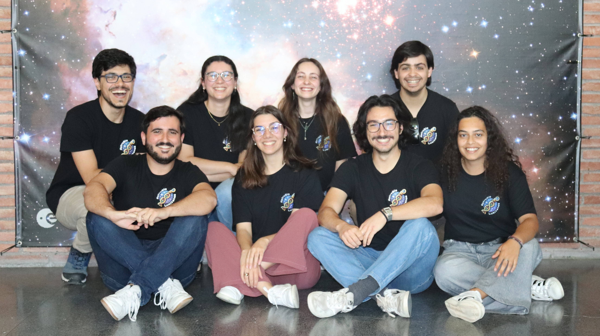
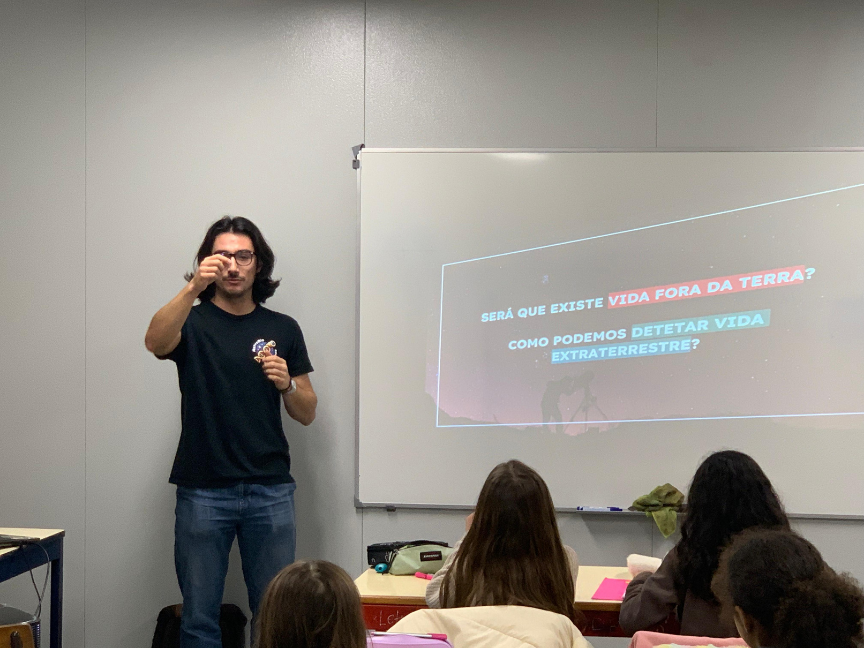
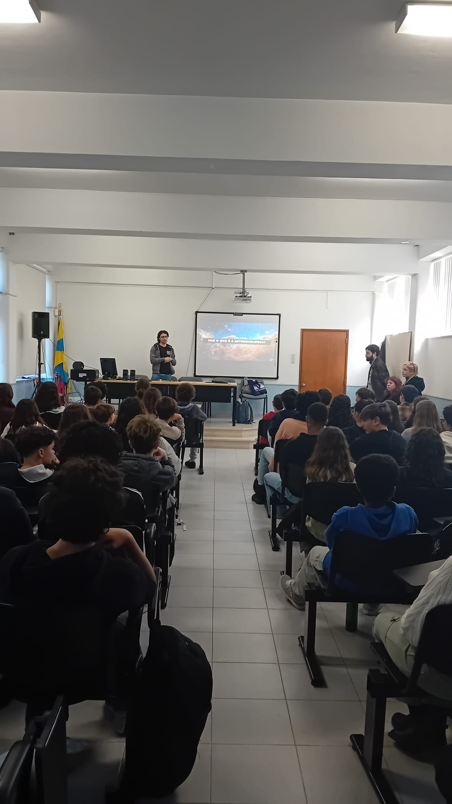
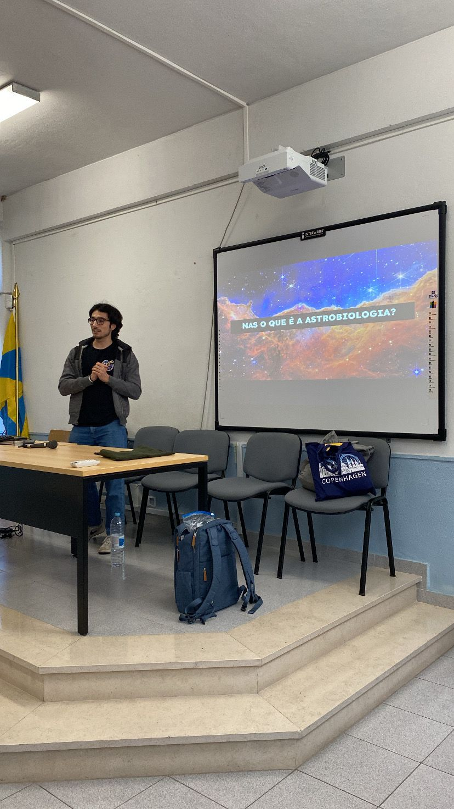
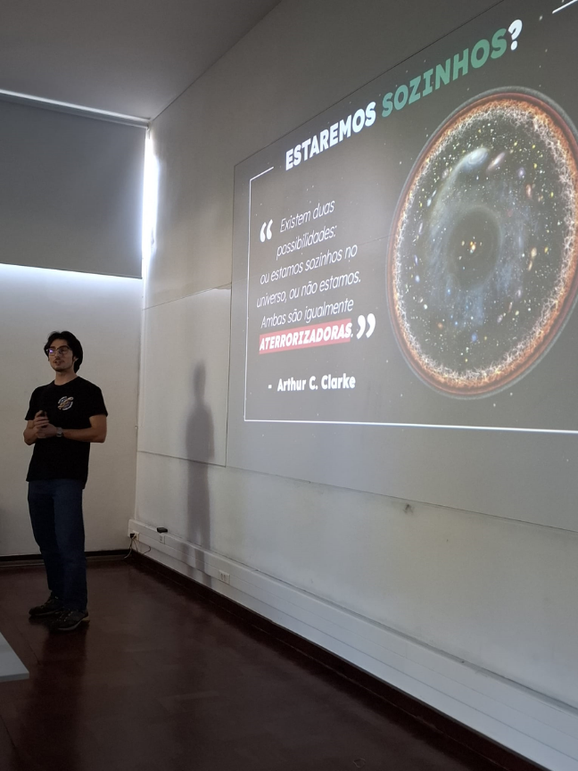
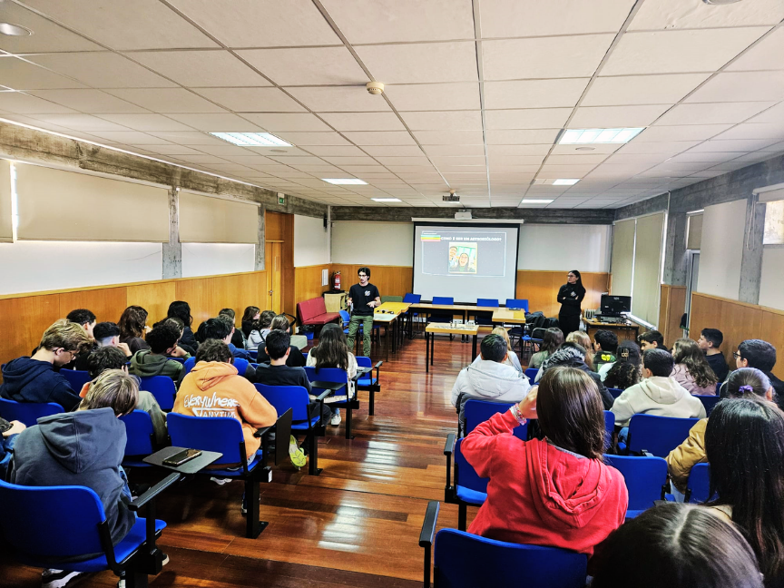
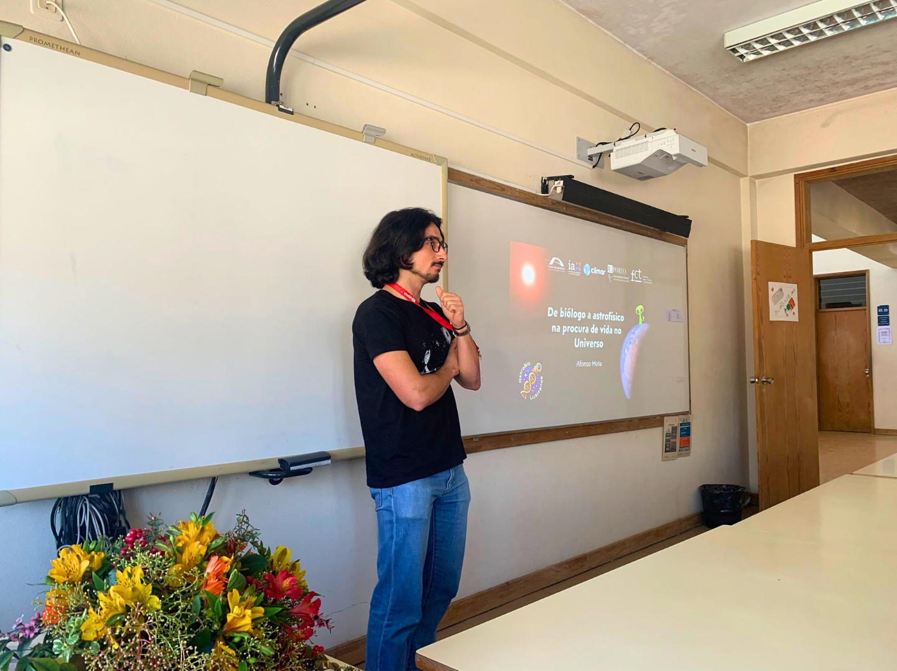
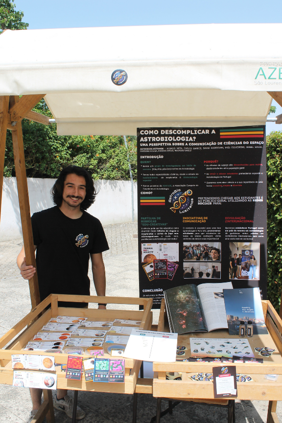
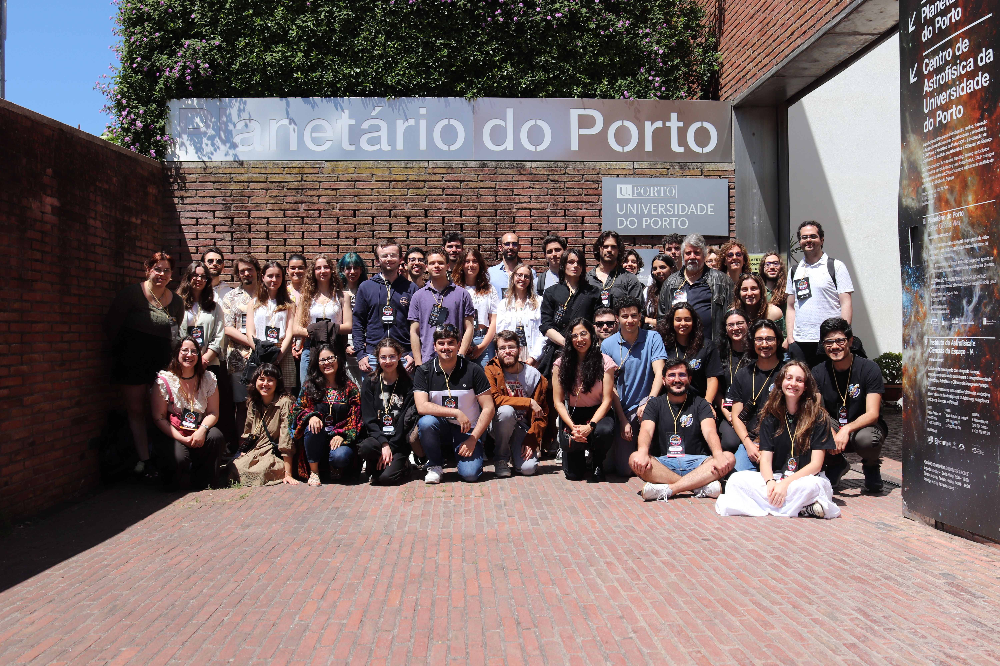
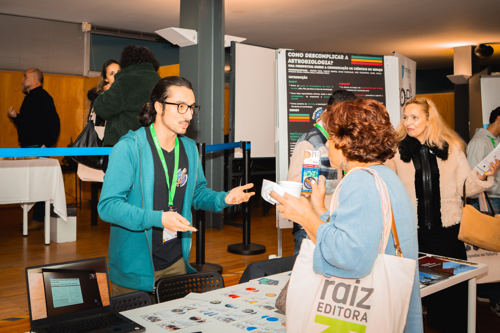
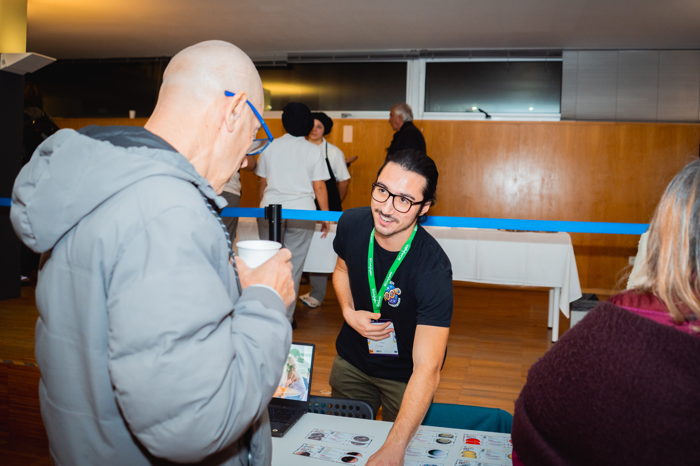
Interviews & stories
In Portuguese
90 Segundos de Ciência
In episode 2304, I discuss research on the limits of life in exoplanet-like environments and the icy moons of the Solar System.
In English
Astrobiology Revealed #23
A conversation with Aubrey Zerkle for AskAstrobio about fungal survival on M dwarf exoplanets, planetary atmospheres, and the value of fundamental research.
In Portuguese
Microorganismos extremófilos na exploração espacial
With Marta Cortesão and Inês Figueiredo, I explore the role of extremophilic microorganisms in space exploration for Revista de Ciência Elementar.
Let's talk about life in the universe.
Get in touch about science communication and astrobiology.